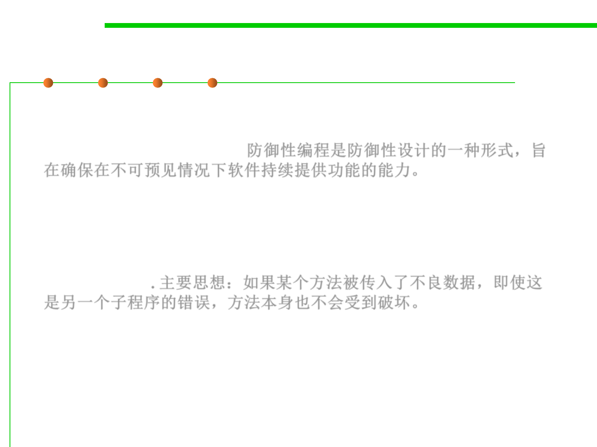

7.3 Assertions and Defensive Programming
What is defensive programming?
▪ Defensive programming is a form of defensive design intended to
ensure the continuing function of a piece of software under
unforeseen circumstances. 防御性编程是防御性设计的一种形式，旨
在确保在不可预见情况下软件持续提供功能的能力。
– Defensive programming practices are often used where high availability,
safety or security is needed.
▪ In defensive programming, the main idea is that if a method is
passed bad data, it won’t be hurt, even if the bad data is another
routine’s fault. 主要思想：如果某个方法被传入了不良数据，即使这
是另一个子程序的错误，方法本身也不会受到破坏。
– More generally, it’s the recognition that programs will have problems and
modifications, and that a smart programmer will develop code
accordingly.